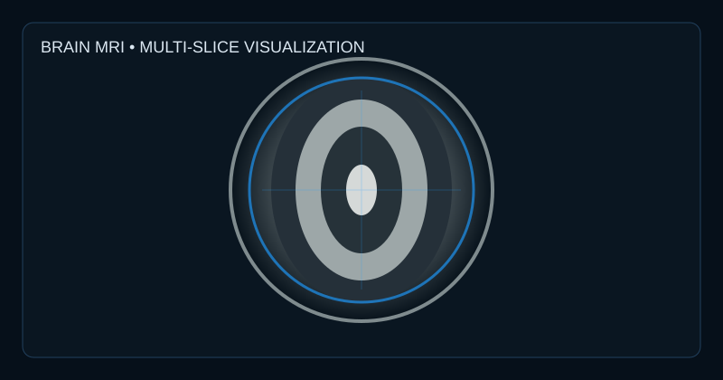
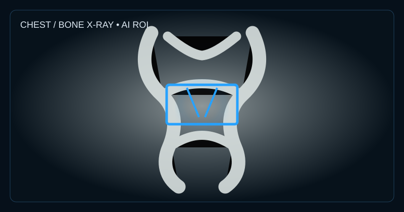
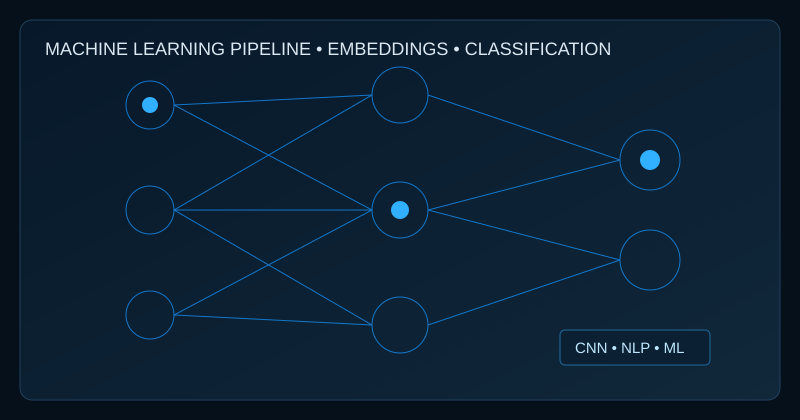

MedVision AI
Medical Imaging AI PlatformEnd-to-end platform for medical image analysis with DICOM support, AI models, explainability, and cross-platform access (Web, Mobile, Desktop).
View Project →MSc Medical Engineering student at FAU specializing in Medical Image & Data Processing, with 4+ years of IT engineering experience. Background in Python, SQL, machine learning, deep learning, computer vision, data analysis and visualization. Published researcher with hands-on experience applying AI and data-driven solutions, including medical image analysis.
♙ More About Me
End-to-end platform for medical image analysis with DICOM support, AI models, explainability, and cross-platform access (Web, Mobile, Desktop).
View Project →
Master's thesis project using Vision Transformer and Deep Transfer Learning for accurate bone fracture detection in medical images.
View Project →Hybrid deep learning and machine learning model for accurate forecasting of Bangladeshi garlic prices using time series data.
View Project →
Bangla hate speech detection using embedding techniques and hybrid machine learning algorithms.
View Project →Friedrich-Alexander Universität Erlangen-Nürnberg (FAU), Germany
Jahangirnagar University, Bangladesh | CGPA: 3.50/4.00
Thesis: Bone Fracture Detection using Vision Transformer and Deep Transfer Learning for medical image analysis.European University of Bangladesh | CGPA: 3.19/4.00